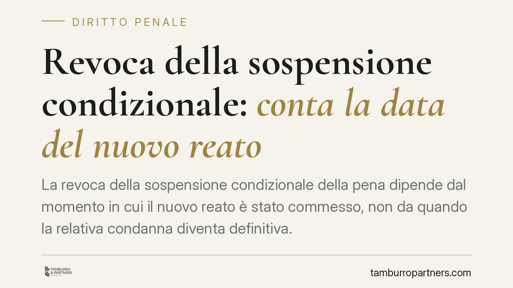

Revoca della sospensione condizionale: conta la data del nuovo reato
La revoca della sospensione condizionale della pena dipende dal momento in cui il nuovo reato è stato commesso, non da quando la relativa condanna diventa definitiva. Lo ribadisce la Corte di Cassazione. Il quinquennio decorre dal passaggio in giudicato della sentenza che concede il beneficio: ciò che conta è che il nuovo fatto cada dentro quel termine, a prescindere dall'irrevocabilità successiva.

Il caso
Un condannato aveva ottenuto la sospensione condizionale della pena. Successivamente commetteva un nuovo reato entro il termine di legge, ma la relativa sentenza diventava definitiva solo dopo la scadenza del quinquennio. Il Tribunale di Bari disponeva la revoca del beneficio. La questione sottoposta alla Corte di Cassazione, Sezione V penale (pronuncia depositata a novembre 2025; estremi identificativi da verificare in redazione prima della pubblicazione), riguardava proprio il criterio temporale: rileva la data in cui il nuovo reato è stato commesso o quella in cui la condanna è divenuta irrevocabile?
La Corte ha respinto l'interpretazione fondata sulla definitività della condanna. Ciò che conta è la collocazione temporale del fatto: se il nuovo reato è stato commesso entro i termini di legge, la revoca è legittima anche quando la sentenza che lo accerta passa in giudicato dopo la scadenza di quel termine.
Inquadramento normativo
L'istituto è disciplinato dall'art. 168 del codice penale. Il primo comma, n. 1, prevede la revoca della sospensione quando, nei termini stabiliti, il condannato commette un delitto ovvero una contravvenzione della stessa indole, per cui venga inflitta una pena detentiva, oppure non adempie agli obblighi imposti. Sono quindi due ipotesi distinte: la commissione di un nuovo reato con determinate caratteristiche e il mancato adempimento degli obblighi.
Il termine rilevante è il quinquennio (o il biennio per le contravvenzioni) previsto dall'art. 163 c.p., che decorre dal passaggio in giudicato della sentenza che concede la sospensione. È questo il dies a quo, cioè il giorno dal quale si inizia a contare il periodo.
La Corte chiarisce il punto essenziale: l'evento che deve collocarsi dentro il quinquennio è la commissione del nuovo reato, non la sua definitività processuale. Il processo per il nuovo fatto può concludersi molto tempo dopo, ma ciò non incide sul presupposto della revoca.
Perché conta
La distinzione ha effetti concreti rilevanti. Un imputato potrebbe ritenere di essere al riparo dalla revoca perché la seconda sentenza è diventata irrevocabile dopo la scadenza del termine. L'interpretazione della Cassazione esclude questa lettura: se il fatto è stato commesso nel quinquennio, la revoca può operare a prescindere dai tempi del processo.
Esempio: la prima condanna con sospensione diventa definitiva il 1° gennaio 2020. Il quinquennio scade il 1° gennaio 2025. Se un nuovo reato viene commesso il 1° dicembre 2024, ma la sentenza che lo accerta diventa definitiva solo nel 2026, la revoca resta possibile. Il fatto rientra nel termine; la successiva definitività non lo sposta.
Cosa fare in concreto
- Individuare il dies a quo: verificare la data di passaggio in giudicato della prima condanna, poiché è da quel momento che decorre il quinquennio.
- Confrontare la data di commissione del nuovo reato con la scadenza del termine: è questo il dato decisivo, non la data di irrevocabilità della seconda sentenza.
- Ricostruire con precisione la cronologia processuale: raccogliere gli estremi di entrambe le condanne e le date rilevanti prima di valutare qualsiasi impugnazione.
- Valutare la natura del nuovo reato: verificare se rientra tra le ipotesi dell'art. 168, comma 1, n. 1 c.p. (delitto o contravvenzione della stessa indole con pena detentiva).
- In presenza di un procedimento di revoca, è opportuno rivolgersi tempestivamente a un difensore per esaminare la sussistenza dei presupposti temporali e di merito.
Un principio, non un automatismo
La pronuncia definisce un criterio di calcolo, non un esito predeterminato. La revoca presuppone la verifica puntuale di più elementi: la natura del nuovo reato, la pena inflitta, la corretta individuazione del termine e la sua decorrenza. Ogni situazione va valutata sui dati concreti del singolo caso, che possono condurre a esiti diversi.
Consigliamo di non affidarsi a valutazioni sommarie basate sulle sole date di deposito o di definitività delle sentenze: è la ricostruzione completa della sequenza a determinare l'applicabilità della revoca.
Contributo informativo a cura di Tamburro & Partners Avvocati - Avv. Giuseppe Tamburro. Non costituisce parere legale.
Ogni condominio ha una storia a sé.
Se gestisci un'amministrazione e vuoi un confronto su una specifica questione condominiale, scrivi allo studio. Ti rispondiamo entro un giorno lavorativo.